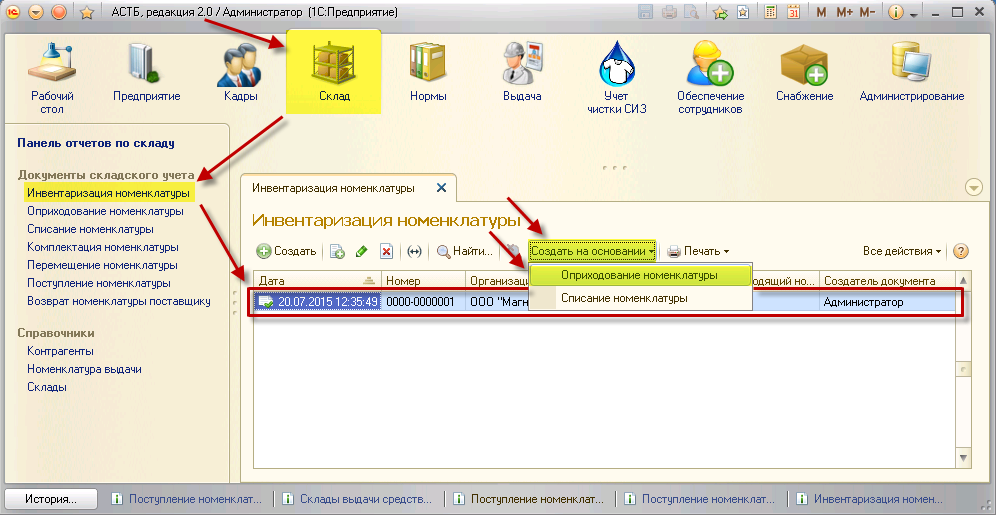
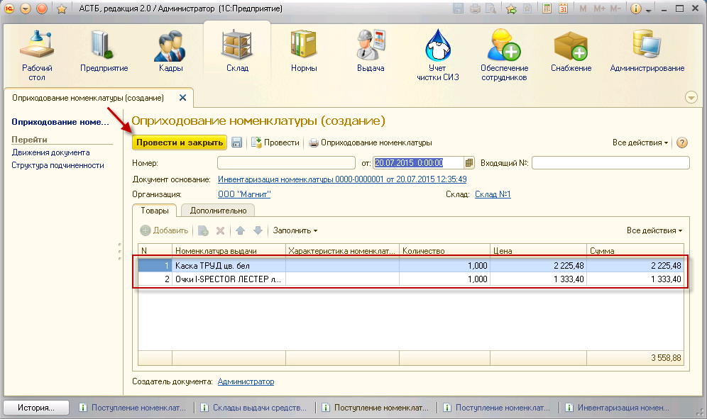
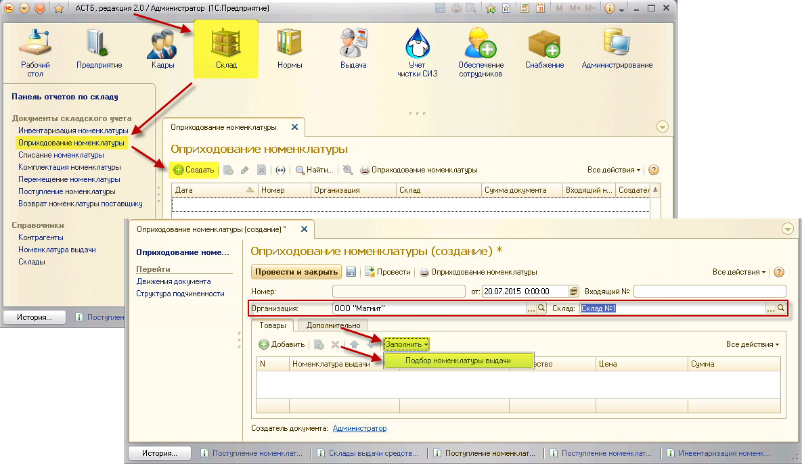

– Создать новый элемент копированием предыдущего;
– Создать новый элемент копированием предыдущего;Если при инвентаризации были выявлены товары, которые на складе не числились, необходимо сформировать документ оприходования. Существует несколько способов формирования данного документа.
Документ оприходования может быть создан на основании документа инвентаризации. Для этого зайдите в раздел «Склад», документ «Инвентаризация номенклатуры». Из списка выберите нужный документ по дате его формирования и выделите его нажатием. Затем нажмите кнопку «Создать на основании», пункт «Оприходование номенклатуры».

После этого откроется окно «Оприходование номенклатуры (создание)» с заполненной табличной частью, в которой буду указаны товары, количество которых превышает учетные данные, исходя из документа инвентаризации.

Если данные указаны верно, нажмите кнопку «Провести и закрыть».
Командная панель данной формы содержит следующие кнопки:
– Создать новый элемент копированием предыдущего;
 – Удалить текущий элемент;
– Удалить текущий элемент;
 – Переместить текущий элемент вверх;
– Переместить текущий элемент вверх;
 – Переместить текущий элемент вниз.
– Переместить текущий элемент вниз.
Примечание: после автоматического заполнения таблицы в документ «Оприходование номенклатуры» можно вручную добавить СИЗ. Если нажать кнопку «Заполнить», а затем выбрать «Подбор номенклатуры выдачи», появится окно выбора номенклатуры выдачи. Как добавить позицию вручную, описано в следующей главе.
Для выполнения подбора номенклатуры необходимо зайти в раздел «Склад», документ «Оприходование номенклатуры», и нажать кнопку «Создать». Откроется окно, в котором нужно выбрать организацию и склад, на который было произведено поступление товара. Нажмите кнопку «Заполнить», пункт «Подбор номенклатуры выдачи».

Откроется соответствующее окно. В нем нажатием выберите папку «Номенклатура выдачи» и проставьте флажок «Только в наличии на складе» напротив нужного склада. Затем выберите лишнюю по отчетности номенклатуру, ее характеристику и, удерживая левую кнопку мыши, перетащите ее в окно данных для переноса в документ. После переноса укажите излишек по выбранному товару (количество). Затем нажмите кнопку «Перенести в документ».
Затем в окне «Оприходование номенклатуры (создание)» нажмите кнопку «Провести и закрыть».